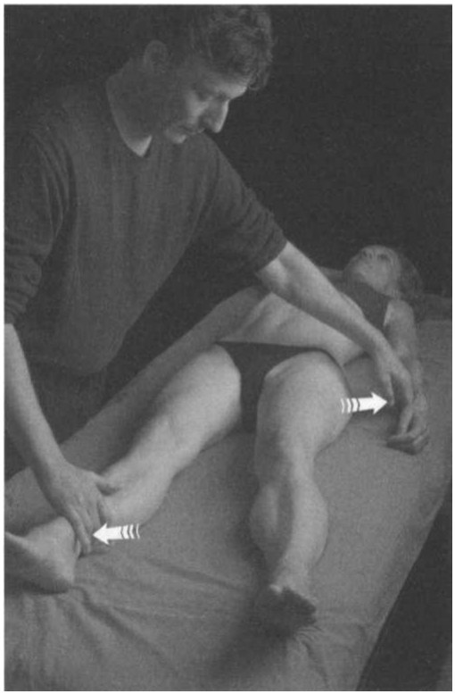

Chương V — Các bài kiểm tra khác (Miscellaneous Tests)
V. Các bài kiểm tra khác
ĐI BỘ VỀ PHÍA TRƯỚC
Cản trở cố gắng của khách hàng khi nâng tay
và chân thẳng đối bên. Bài kiểm tra này đánh giá các cơ
của đi bộ theo chuyển động tích hợp. Với các cơ
kiểm tra yếu, làm việc theo đường đối bên để
tăng cường các cơ của chi đối bên.
**Thực hiện ngược lại các hướng dẫn này để kiểm tra
đi bộ về phía sau.
DI CHUYỂN NGANG
Cản trở lực khép của chân đối bên của khách hàng
trong khi cản trở tay giang ra. Bài này đánh giá
tính toàn vẹn của chuyển động ngang. Có thể
thực hiện theo cách ngược lại. Thực hiện
cùng quy trình hiệu chỉnh như ở đi bộ về phía trước.
125


126 Neuro Kinetic Therapy
TÍCH HỢP
GIANG
Cản trở tay đối bên đang giang trong khi cản trở
chân đang giang. Bài này đánh giá khả năng của cơ thể
trong việc giang các chi đồng thời (bài tập nhảy dang tay).
Thực hiện cùng quy trình hiệu chỉnh như ở
đi bộ về phía trước.
TÍCH HỢP
KHÉP
Cản trở tay đối bên đang khép trong khi cản trở
chân đang khép. Bài này đánh giá khả năng của cơ thể
trong việc khép các chi đồng thời (bài tập nhảy dang tay).
Thực hiện cùng quy trình hiệu chỉnh như ở
đi bộ về phía trước.


Chỉ mục
Tích hợp giang, 126
Giang của
cánh tay (xương), 33
cổ tay, 41
Cơ giang ngón cái dài, 49
Cơ giang của
hông, 119
cánh tay (xương), 57
ngón cái và các ngón, 63
cổ tay, 62
Cơ khép
ngắn, 92
dài, 92
lớn, 93
ngón cái, 48
Cơ khép của
hông, 119
cánh tay (xương), 57
ngón cái và các ngón, 63
cổ tay, 62
Tích hợp khép, 126
Khép của
hông, 91
cánh tay (xương), 33
cổ tay, 41
Cơ nhị đầu
đùi, 100
đầu dài, 28
đầu ngắn, 29
Duỗi cổ hai bên, 4
Cơ cánh tay, 29
Cơ cánh tay – quay, 31
Cơ cánh tay – mỏm quạ, 19
Cơ delta
trước, 16
giữa, 17
sau, 18
Cơ hạ bả vai, 51
Cơ gập lưng cổ chân,
122
Cơ xoay xuống của
bả vai, 53
Cơ nâng bả vai, 51
Lật ngoài bàn chân, 111
Cơ lật ngoài bàn chân, 123
Duỗi của
hông, 82
cánh tay (xương), 32
cổ tay, 40
Cơ duỗi cổ tay quay
ngắn, 37
dài, 37
Cơ duỗi cổ tay trụ, 39
Cơ duỗi ngón
chi dưới, 115
chi trên, 44
Cơ duỗi ngón cái dài, 114
127